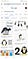

Down ranked websites

There is this tsunami coming in the online content industry with an update that for sure will downrank a lot of websites that was designed to sell not to teach and inform. The marketing-driven websites and those that are technically not well architectured for speed and network data volume reduction. consumption lowering. This is a tsunami for SEO website owners not for content consumers and producers like me and you. It is a curious thing to see surfers survive In a terrific tsunami while big boats get broken and pushed down the black and dark ground base of the ocean. Small, flexible and fast is the next thing and it is next-generation light, fast and smart websites ran by engaged individuals leading tribes of people who share interest and passion and do work that matter. They are book lovers, they are software engineers, they are designers, they are marketers, they are scientists, they are artists. They are for most of the early internet users who made this internet medium expands and reaches the mass. Instead of focusing first on revenues they focused on change, impact and work that matter first because they want to make things better and ease the way for others to make the next things.
In fact if you see clearly this is about two tsunamis,
the bad — down ranking slow website
Good — promoting good real persons not bots
I just saw a the bad the good and the ugly few days ago and I am tempted to thing if there is not something ugly into this content tsunami.
Content tsunami is a content editing, publishing and distribution platform that let everyone push online content and make it spread like wildfire for impactful actions that make thing better. It is designed and developed and putted in the shelves years ago because there is more important until now. It keeps being a key tool of our stack for me and my networks of tribes.
